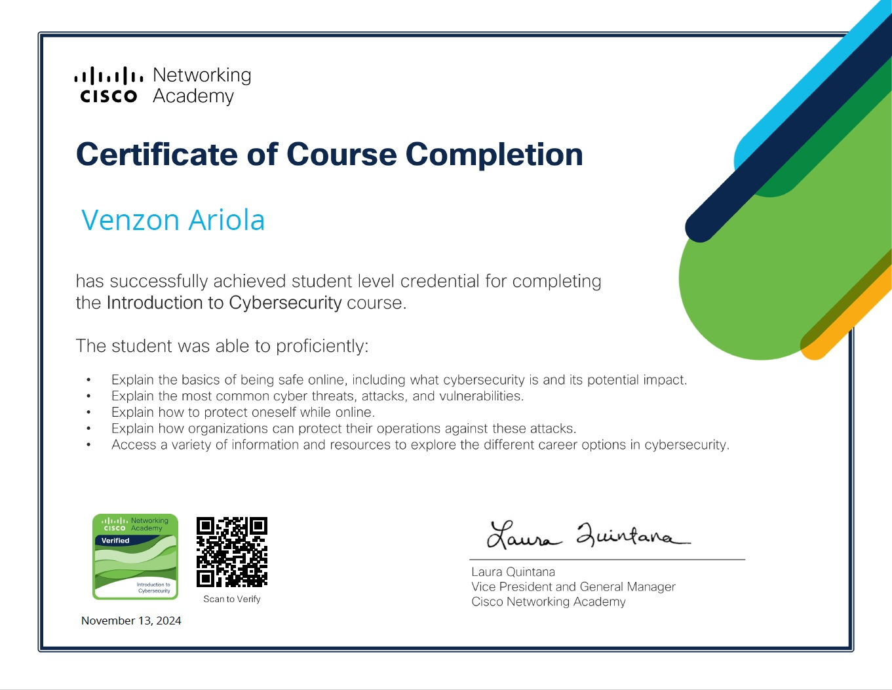
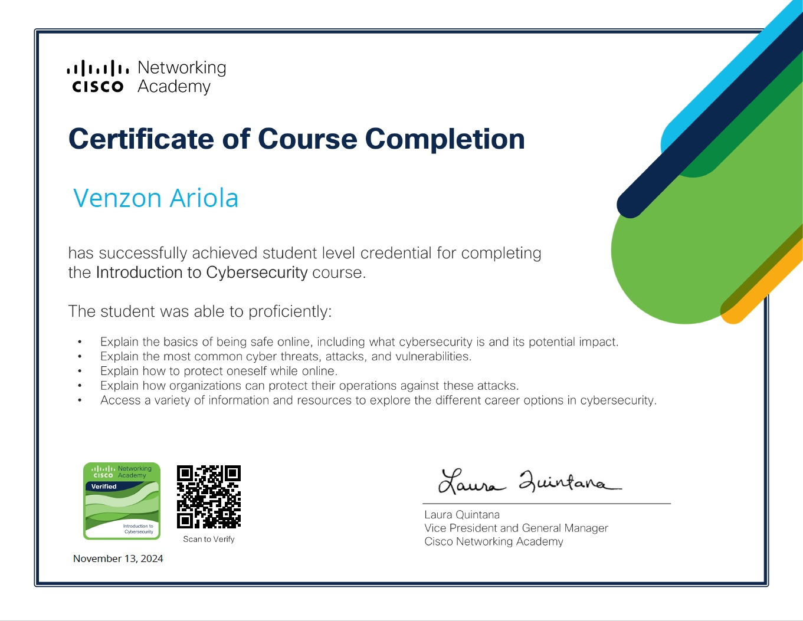

Asia Pacific Journals Website
Institution:Lyceum of the Philippines University – Batangas
Role:Web Developer / UI/UX Designer
Managed and maintained network infrastructure, including servers, Ruckus routers, Cisco switches, and structured cabling systems.
Designed and implemented LAN, WAN, and internet-based networks; ensured optimal performance, security, and reliability.
Provided technical support and resolved network, hardware, and software issues across the organization.
Installed, configured, and maintained operating systems (including Windows Server), performed system backups, cloning, and recovery using tools like Windows Live.
Diagnosed and repaired computer and laptop hardware; performed upgrades and system optimization.
Configured and maintained printers using advanced Windows Registry settings; assembled/disassembled units for efficiency and longevity.
Configured and maintained printers using advanced Windows Registry settings; assembled/disassembled units for efficiency and longevity.
Supported maritime training through Kongsberg and ARI simulator operations.
Ensured compliance with security protocols and contributed to disaster recovery planning.
University Sustainable Development Goals (SDGs) Website Institution
Institution:Lyceum of the Philippines University – Batangas
Role:Web Developer / UI/UX Designer
Developed a dynamic SDGs web section aligned with the university’s advocacy for the UN Sustainable Development Goals.
Highlighted educational, research, and community initiatives through visual storytelling and responsive layout.
Ensured consistency with institutional branding and improved user engagement through intuitive design.
Cybersecurity Web Page – University Data Protection Office
Institution:Lyceum of the Philippines University – Batangas
Role:Web Developer / UI/UX Designer
Designed and developed a responsive web page to promote cybersecurity awareness and user education.
Created accessible, informative content aligned with data privacy policies and implemented modern web standards for security and usability.
MyPortal Dashboard Redesign
Institution:Lyceum of the Philippines University – Batangas
Role:Web Developer / UI/UX Designer
Redesigned the MyPortal dashboard to improve accessibility, navigation, and responsiveness across devices.
Created a unified, user-centered interface for accessing institutional systems, services, and resources.
Enhanced user productivity through real-time updates and intuitive design structure.
Time and Attendance System
Institution:Lyceum of the Philippines University – Batangas
Role:Web Developer / UI/UX Designer
The Integrated Attendance and Event Monitoring System is a digital platform that tracks time-in/out and monitors participation in events for both employees and students.
Student Portal
Institution:Lyceum of the Philippines University – Batangas
Role:Web Developer / UI/UX Designer
The Integrated Attendance and Event Monitoring System is a digital platform that tracks time-in/out and monitors participation in events for both employees and students.
Corporate Website Update
Institution:Lyceum of the Philippines University – Batangas
Role:Web Developer / UI/UX Designer
Led the corporate website redesign to align with modern web trends and institutional branding.
Used WordPress, custom PHP, HTML/CSS, and Adobe XD to implement responsive layouts and improved navigation.
Applied SEO best practices (via Rank Math) and ensured cross-browser compatibility and accessibility compliance.
Network Cabling Infrastructure and IT Equipment Modernization
Institution:Lyceum of the Philippines University – Batangas
Role:ICT Support Engineer
Replaced and upgraded legacy network cabling to enhance connectivity, system stability, and performance.
Performed structured cabling, termination, and diagnostics using Fluke testers and cable tracers.
Worked closely with IT and facilities teams to minimize operational disruption during infrastructure replacement.
Assisted in switch/router reconfiguration post-installation to ensure optimal network functionality.
Upgraded IT equipment across multiple departments and laboratories, including the deployment of new workstations, printers, and network devices, ensuring compatibility with the enhanced infrastructure and improving overall user productivity.


 



 Design.jpg)